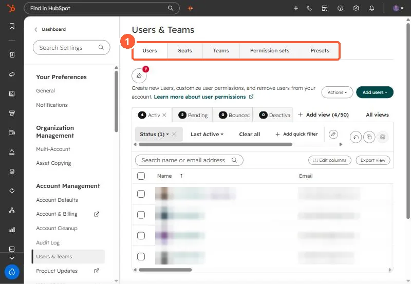
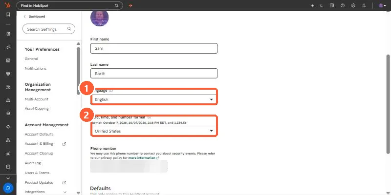

Short answer
In HubSpot a seat decides which tools a user can open, and permissions decide what they can do inside them. View-Only seats are free and unlimited on paid plans; Core seats cover the core tools you bought; Sales and Service seats unlock Sales Hub or Service Hub Professional and Enterprise features. Save combinations as permission sets so new hires match existing ones. Only a Super Admin can make another Super Admin, so keep at least two. Log in as user needs two-factor login on the account and lasts 30 minutes. With an identity provider, SCIM creates and removes users for you.
1. Users & Teams
Everything here lives in Settings, Users & Teams, with separate tabs for Users, Seats, Teams, Permission sets and Presets (1):


2. Seats
| Seat | What it gives |
|---|---|
| View-Only | Free and unlimited on Starter, Professional and Enterprise. View records, dashboards and reports, filter reports, and log notes on records they can see. Can be given billing admin permissions. |
| Core | The core features of the hubs you bought. On Sales Hub and Service Hub Starter, a Core seat includes those hubs' features. |
| Sales or Service | All features of Sales Hub or Service Hub Professional or Enterprise. |
| Developer | Cannot be combined with other seats or Super Admin. Give developers the Developer tools access permission instead. |
The seat-based model applies to accounts and subscriptions created after March 5, 2024. Older accounts that have not migrated only have purchased Sales or Service seats. Adding or removing seats can change your bill, and the Seats tab lets you transfer a seat from one user to another.
Since HubSpot's May 2026 release, Core seat users get full access to email templates and snippets without a Sales or Service seat.
3. Permission sets
- On the Permission sets tab, create a set, name it, and choose its access.
- To assign it, select users on the Users tab, then More, Assign Permission Set.
Permissions control things like communicating only with owned contacts, editing properties, exporting, and which logged emails a user can read (see email logging permissions). Users with Add and edit users permission can only grant permissions they have themselves. If you provision users from an identity provider, HubSpot matches role names to permission set names.
4. Super Admins
- Only a Super Admin can assign Super Admin.
- A Super Admin can do virtually anything. A user with every permission but not Super Admin still cannot do some things.
- Removing Super Admin leaves the user with whatever permissions you assign.
Keep at least two Super Admins, so the account is not stuck when one leaves or loses their two-factor device. See account security and login.
5. Log in as another user
Useful for seeing exactly what a user sees. The rules:
- Two-factor login must be required on the account.
- You cannot log in as Super Admins, users with billing permissions, or users who have not accepted their invite.
- Each session lasts 30 minutes, and actions are logged.
Tell the user before you do it, since your actions show in their activity.
6. User profile and properties
Each user sets their own language and date, time and number format in their profile preferences:


Admins see each user's presets, teams, skills and preferences on the user record and can edit properties in bulk from the users table. Some preferences only the user can change. Custom user properties and the user audit log need Enterprise.
7. Remove a user, or delete your own
- Removing someone from your account stops their access, but their HubSpot user (tied to the email address) still exists for other accounts.
- You can permanently delete your own user only when it is not associated with any other HubSpot account. That also deletes HubSpot Academy certifications on that email, so transfer them first.
- A user's default meeting link cannot be deleted or transferred. Ask them to turn off their scheduling pages before you deactivate them, see meeting links.
8. Provision users with SCIM
SCIM creates, updates and removes HubSpot users from your identity provider. Okta and Google have guided setups. Other providers, such as Microsoft Entra ID, use a custom SCIM integration. To assign paid seats through Google, buy the seats in HubSpot first, create a permission set that includes a paid seat, then set the user's custom attribute in Google.
9. What is changing for 2027
- Core seats cover more. The May 2026 change gave Core seat users templates and snippets. Review who really needs a paid Sales or Service seat at renewal.
- Accounts still on the old model (created before March 5, 2024 and not migrated) work differently. Check which model your account is on before planning seat changes.
- Offboarding is a checklist. Seats, Super Admin coverage, meeting links, service keys the person created, and SCIM deprovisioning all need to line up when someone leaves. See service keys.
Common questions
What is the difference between a seat and a permission?
The seat decides which tools the user can use. Permissions decide what they can view, create, edit or delete in those tools.
Why can I not make someone a Super Admin?
Only a Super Admin can assign Super Admin, even if you have Add and edit users permission.
Why can I not log in as a user?
The account needs two-factor login required, and you cannot log in as Super Admins, billing users, or users who have not accepted their invite.
Do View-Only users cost anything?
No. View-Only seats are free and unlimited on Starter, Professional and Enterprise.
Sources
- HubSpot Knowledge Base: Assign and manage seats
- HubSpot Knowledge Base: Create and assign permission sets
- HubSpot Knowledge Base: HubSpot user permissions guide
- HubSpot Knowledge Base: Manage user permissions
- HubSpot Knowledge Base: Log in as another HubSpot user
- HubSpot Knowledge Base: Manage user properties and preferences
- HubSpot Knowledge Base: Delete your HubSpot user
- HubSpot Knowledge Base: Provision HubSpot users with SCIM through Google
- HubSpot Community: May 2026 product updates